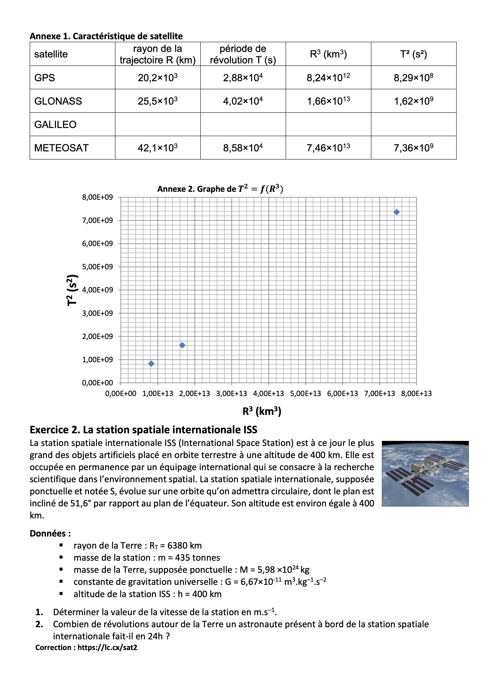
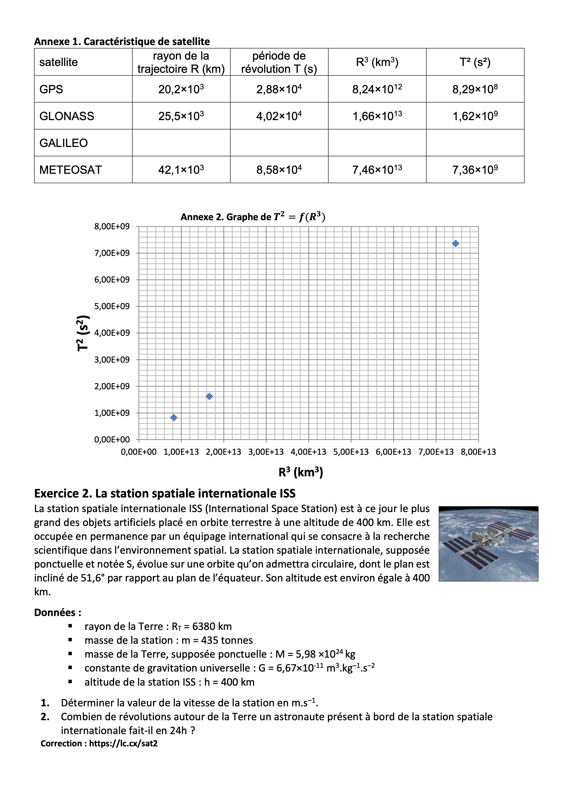

Mouvement dans un champ de gravitation
Savoirs
- Formule de la force d'interaction gravitationnelle et son expression vectorielle.
- Coordonnées du vecteur accélération dans la base de Frenet pour un mouvement circulaire.
- Définitions de repère géocentrique, heliocentrique, terrestre, satellite géostationnaire.
- Définir la période de révolution T
- Savoir ou retrouver que \(T=\frac{2\pi r}{v}\) dans le cas d'un MCU
- Enoncés précis des 3 lois de Képler
Techniques clés
- A partir de la 2nd loi de Newton:
- Déterminer les caractéristiques des vecteurs vitesse et accélération du centre de masse d’un système en mouvement circulaire dans un champ de gravitation newtonien.
- Démontrer la 3ème loi de Képler dans le cas d'un mouvement circulaire uniforme.
Vidéos de cours
Les 3 Lois de Képler et un peu plus Récap
Exercices type BAC:
Sujet de l'exercice et correction en vidéo:
 

Métropole Mars 2021 SI sujet 2 - Le déploiement des satellites Starlink
Attention la première question nécessite un sujet papier et ne concerne pas les lois de Képler.
QUIZZ
Q1
D'après les lois de Képler
- Les orbites des planètes sont circulaires
- Les orbites des planètes sont elliptiques
- Le Soleil est un foyer de la trajectoire de Mars
- La Terre est un foyer de la trajectoire de la Lune
Q2
Un satellite géostationnaire
- est toujours au dessus de la même région terrestre
- se déplace pour couvrir toute la surface de la Terre
- Dans le référentiel géocentrique, fait un tour autour de la Terre en 24h
- Dans le référentiel terrestre est immobile
Q3
La période de révolution d'un satellite est
- La longueur de sa trajectoire
- La durée pour effectuer un tour
- se note \(T\)
- se note \(a\)
Q4
D'après la troisième loi de Képler
- \(\frac{T^2}{a^2}=cste\)
- \(\frac{a^3}{T^2}=cste\)
- \(\frac{T^3}{a^2}=cste\)
- \(\frac{T^2}{a^3}=cste\)
Q5
La force d'interaction gravitationelle entre deux masses m et M distantes de d a pour valeur:
- \(F=G\frac{mM}{d^2}\)
- \(F=G\frac{mM}{d^3}\)
- \(F=G\frac{m+M}{d^2}\)
- \(F=G\frac{m+M}{d^3}\)
Correction
- Q1: 2,3,4
- Q2: 1,3,4
- Q3: 2,3
- Q4: 4
- Q5: 1